Team Profiles

Sahil
My name is Sahil, my Student Number is s3943681 and our team name is “We Want Tesla's”. I am a New Zealand born; Melbourne raised Fijian Indian. I speak English and Fijian Hindustani. I am currently in my first year of university at the Royal Melbourne Institute of Technology studying a Bachelor of Information Technology. I am left-handed when it comes to writing but with other aspects of life such as sports, I prefer my right hand and am considered ambidextrous. Some hobbies I have are playing soccer, playing video games, watching many tv shows and movies, and cooking. Regarding my interest in Information Technology, it sparked from an early age. I grew up when technology was rapidly advancing and the world around me massively changed due to technology. Video games were my gateway into IT (Information Technology) and since then I became more interested in technology in general. Since my generation grew up with technology, I grew accompanied with it and I become the ‘IT Technician’ of my family. IT is a fast-growing industry with a lot of jobs, especially in Australia, and it pays well, and since I know my way around technology, I figured I might as well make a career out of it.
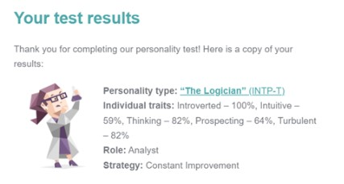 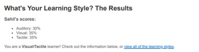 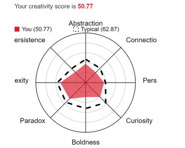When forming a team, it should be taken into consideration that I am 100% introverted and while I am able to socially adapt, I might feel uncomfortable, or I may not know how to approach others with ideas. Some extra effort may be required for me to be able to be open to my team members. Furthermore, as I am less creative than the average human being, my ideas are more inclined to be from within the box then outside the box, which can affect the variety of answers from the group, but I think these results will influence my behaviour in a team very insignificantly. While these results may say otherwise, I am particularly good at working in a team and with others. While I am 100% introverted, I can socially adapt to any group and while I may not be as creative, I make up for it in resourcefulness. These results may influence my perception on how others may see or interact with me. Besides that, these results should not impact my behaviour while working in a team.
Aaron
Aaron currently works as a Data Analysis Operator and is studying part-time at RMIT for a Bachelor of IT under student ID number s3931673. His Introduction to Information Technology course assigned him to the team “We Want Teslas”. His various interests include video games, reading science and fantasy fiction, and more recently table-top games (RPGs or board games). Aaron has always been technology inclined, whether it would be for gaming, peculiar gadgets or scientific advancements, he would try to get his hands on a device to explore its capabilities. During his time in high school when delving into his school’s email software he picked up a programming interest and started using Python to send automated emails.
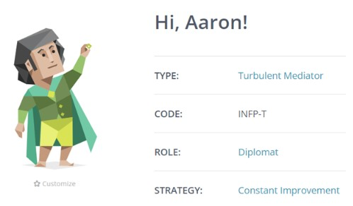 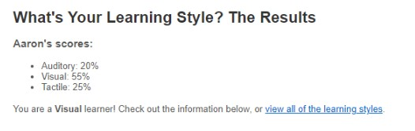Aaron’s 16Personalities test determined that he has a diplomatic, turbulent mediator personality. He prefers to cooperate than compete with his peers and does not define personal success with concrete measurements such as a high salary or awards. As a visual learner, according to the Educator Planner Learning style test, he optimally studies with visual aids explaining concepts rather than just reading about the concept with text only. Videos, diagrams and live demonstrations are ideal learning tools. Truity’s Big Five Personality test indicates that in most scenarios he is open with his thoughts when asked but will often keep them to himself if not prompted to. He is more inclined to cooperation than challenging peers and be easily stressed by negative emotions.
Aby
Aby is pursuing a bachelor’s degree in IT at RMIT, Melbourne. His student number is s3610080 and he is currently a member of the group project “We want Teslas”. Being born in Australia to Indian parents, he fluent in both English and Malayalam- an Indian dialect spoken in the south-western state of Kerala. He graduated from John Monash Science School and began to pursue a degree in Medical Science before transferring to his current degree. He plans to work towards becoming a neuroscientist specialising in neurodegenerative diseases. He is also an accomplished magician and has consulted for multiple award-winning Fringe shows (2020, 2021, 2022), and several corporate audiences including Coca-Cola. He enjoys a variety of hobbies including badminton, soccer and chess and he currently resides in Point Cook with his cavoodle, Annie, as well as his parents and 3 siblings.
•INFP-T
•A postmodern leader
•A Theorist/ pragmatist. Lacking in activist archetype
The Myers-Briggs and learning styles tests indicate a strong tendency towards pursuing creative and experimental endeavours and hint at the benefits of learning via modelling and practicals where possible and storytelling/ problem setting otherwise. Both suggest an ability to bring unconventional ideas to the table and single-minded drive when a passion project is uncovered. The Myers-Briggs also refers to a certain naivety/ tendency to set unrealistic expectations, all of which I, admittedly, can relate to. The Leadership style assessment test describes a postmodern leader as one who understands “leadership is both an art and a science”, postmodern leaders being people who “help others see their own life in a new light”, excelling at improvisation and approaching different ideas with trust and mutual respect. I’m not certain I’ve put myself in enough situations yet to accurately assess the validity of these claims for myself. As a mediator I offer unique ideas and perspectives which would assist in kickstarting and maintaining brainstorming sessions. I initiate fruitful discussion between all participating members and ensure all ideas/topics of discussion are considered. Idealistic thinking may cause moments of procrastination as one must realise perfection is unattainable, however I will offer single minded focus and passion for projects deemed worthy of effort.
Mihir
My name is Mihir Anand. My student number is 3943963. My group’s name is “WE Want Teslas”.My nationality is Indian, and I speak multiple languages, such as English and Hindi. I graduated from Rowville Secondary College and I’m now currently studying Bachelor of Information Technology at RMIT. My favourite hobby is playing basketball and I have played competitive basketball for about 6 years. I am interested in information technology because there are a wide variety of areas that can be specialised in, which allows me to have a more open mind when choosing my career in the future. I am interested about learning how to use different software and programming languages as it is a significant skill in most IT jobs and fields, such as cyber security. I am further interested in learning about robotics and how they are programmed, designed, manufactured, and functioned to produce specific tasks. My interest in IT started in my senior year of high school, when my uncle talked to me about the different types of IT subjects and how it exposes you to a lot of job opportunities, since the IT industry is always in demand.
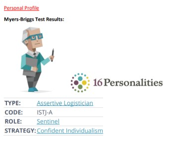 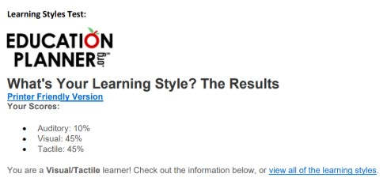 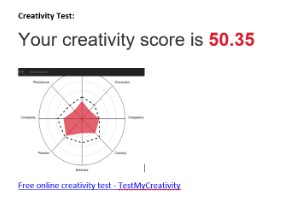The results from all the tests provided above indicate that I portray the characteristics of integrity, practical logic, dedication, and the ability to shift one’s perspective on a situation. Furthermore, the learning styles test demonstrates that I am a visual learner, meaning that my preferred method of learning is through understanding and remembering information through sight. It also shows that I am a tactical learner, meaning I like to participate in activities when understanding new concepts. For me I think these are good qualities to have in an individual. However, these results also suggest that I am a shy and introverted individual, which are not ideal characteristics to have. Having a reserved personality can have negative affect on my behaviour when put in a team, as I will not be able to effectively communicate with my other team members. This may lead to possible errors and mistakes that could ultimately disrupt the team’s work and responsibilities. To avoid this dilemma, it would be a better option to form a team that I am familiar with so I could be in a more comfortable environment. Otherwise, I could look to improve in being more confident in social interactions.
Xiaolong
Hi, my name is Xiaolong Guo who comes from China. My student number is 3880590. Like many other students who study IT, I’m not an extroverted person. During my last 18 years in China, I find it hard to make new friends. Basically, all my friends have same hobbies like me. I like watching animes and play video games, and that’s how I got to know my friends before. I’m trying to change my previous friend-making method and get out of my comfort zone. I have a brother who is 10 years older than me. He was also studying in Melbourne. I’ve been to Australia in 2016 and 2017 for travelling and visiting my brother. I used to play soccer in school, but my knee was injured in a match when I was 16 so I stopped playing soccer since then. I can also play the piano. I learned it by myself. I usually play some animes’ theme songs and that is also my motivation to learn to play the piano. I enjoy classic music, but I rarely play them. After coming to Melbourne, I’ve started to listen pop music by the effect of my brother. I’m looking forward to my life in Melbourne and RMIT.
Tests
Myers-Briggs test: Personality type: Mediator (INFP-A)
Learning style test: Solitary Learning Style
I’m a solitary learner! I am preferring to work alone and use self-study to learn new material. I like to focus your thoughts on the material I am learning and like to assess my thoughts, strengths and weaknesses.
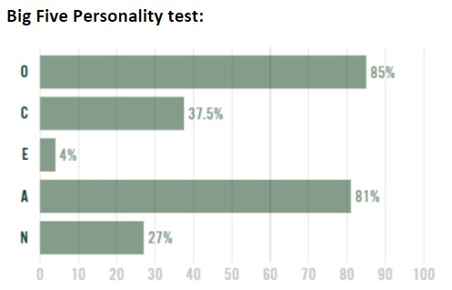Adam
My name is Adam Lee and my student number is s3947515. I am a part of the group called “We Want Telsas”. I am a dual citizen between Britain and Australia being born in the UK and being raised in Australia. I am currently in my first year at RMIT studying a bachelor of information and technology. I became interested in technology from a young age when I first started using a computer at school and interested in how it works. I also got my interest in IT from playing video games from an early age. My hobbies include playing badminton, playing video games and watching many different tv shows. Because of my interest in technology I became interested in doing it as a job which lead me to doing a bachelor of information and technology so that I could get a job in the IT field.
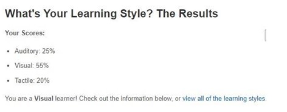 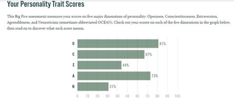 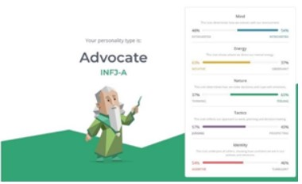It shows that I am an open person and very neutral on topics which is things that I agree on. These tests to me show me my qualities that I have and shows me who I am and what I am good at as well as what I might not be good at. These might make me self-aware and change my behaviour of when I am in a group and change the way I act depending on the situation that occurs and who my group members. I think I should take this into account by looking at the people around me and putting myself in a group with people I will get along with and ones with slightly differing results from mine that will help in balancing out the group and help in making everything run smoothly.
|
Name |
Myers-Briggs Type |
Learning styles |
|
Sahil |
The Logician (INTP-T) |
Auditory: 30% Visual: 35% Tactile: 35% |
|
Aaron |
The Mediator (INFP-T) |
Auditory: 20% Visual: 55% Tactile: 25% |
|
Aby |
The Mediator (INFP-T) |
Auditory: 25% Visual: 35% Tactile: 40% |
|
Mihir |
The Sentinel (ISTJ-A) |
Auditory: 10% Visual: 45% Tactile: 45% |
|
Xiaolong |
The Mediator (INFP-A) |
Solitary Learner |
|
Adam |
Advocate (INFJ-A) |
Auditory: 25% Visual: 55% Tactile: 20% |
From the Myers-Briggs personality tests, all our team members are introverted, this could lead to very solemn discussions during meetings with people hesitant to speak out their ideas and a tendency to keep to ourselves when working on the assignment tasks. This was apparent when all of us took independent workstyles in our first meeting when allocating tasks. The Mediators of the group may take leaderships roles if no apparent direction is available according to the personality profiles provided 16personalities, so if any member who was leading of the project is absent, we have several personality types who would be inclined to push the project along.
Most of us did the learning styles test, which gave us a clear understanding of how we may work together over communication tools such as MS teams. All of us who took the learning styles test are primarily visual and tactile learners, more inclined to learn by example and through diagrams or video. Any collaborative work over for the assignment would benefit being conducted in person or over video chat, environments that allow immediate feedback and idea contribution.
Career Path
Aaron
My initial career plan at the beginning of this course was to simply become a Data Engineer, to be skilled in designing, building and maintaining information structures for organisations to use for their operations. In previous assignments it was discussed that certain skills such as teamwork, SQL coding, communication and others would be highly valuable to my skillset for employment in the data operations field.
Over the past few weeks working on IT assignments, my career plan hasn’t changed direction but has developed in scope, now I wish to lead my own team and become a database developer for various corporations. While Data Engineering is still the goal, I have clearer picture of how my career would develop to a leadership role in an age where cloud-based services are prevalent.
To become a leader in a data operations team I’ll need to expand my skillset to include other platforms in IT, most prominently cloud services, as large organisations are developing and moving to cloud based networks to store their online services and information. Alongside designing databases in the cloud, I would also likely be dictating accessibility systems into the cloud, which means learning storage and access into cloud systems would work on the technical level as well as surface level.
My leadership skills would need to be improved significantly, learning how to handle and welcome teams and difficulties is an experience taken from these past few assignments and from here I believe I need to improve my capability to motivate and organise.
Aby
When I first entered this course, I aimed to develop the skills required to be successful as a neuroscientist. My dream job offered a head of lab position . From an IT perspective, this required ample technical knowledge of python, R, SQL and database design, accompanied by soft skills like time management , communication, problem solving and teamwork.
This semester has given me a cursory taste of the challenges that might be faced when holding such a technically demanding position, especially when one is overseeing multiple studies simultaneously. I’ll need significantly greater understanding of the nuances behind Python and SQL however, this semester’s subjects have also shown how versatile and limitless these languages can be and the wealth of information being collaboratively curated about them online.
My time management ability is still lacking, and I am likely required to become more assertive as I recognise most colleagues will not be as agreeable as the current assignment group. I also realise that I will have to develop a more self-directed outlook as most tasks will not be group assignments where others are reliant on my participation. Overall, I’m confident in my ability to quickly develop the required technical skills and will seek to actively put myself in environments where my soft skills will be tested.
Adam
My ideal job at the beginning of this course was to be a ICT consultant which required me to be skilled in procedures, plans and databases. While working on IT assignments over the semester I have found that my career plan has changed slightly as I wish to be able to be a consultant in a wider range of areas and not just be limited to a set thing such as the previous job, I was looking at which didn’t require python and design which are subjects I want to do while working at my ideal job. To be able to do this I would have to look for a job being more general and could achieve this by trying to do the highest levels I can in each subject such as programming, databases, ect while at RMIT. I also believe I need to improve my communication more within a team and to be able to widen my understanding of software used.
Mihir
In the future, I plan on becoming a cyber security specialist and to acquire computer hardware, software, and network skills. Despite working on IT assignments for several weeks, my career plan hasn’t changed. I am still determined to reach my career goal. Even though I intend to pursue this career path in the future, I will need to improve my leadership skills and communications skills significantly. A key requirement for this role is communication skills and the ability to work in a team, as it requires interacting with individuals from other departments and roles. When I compare my ideal job to that of my group members, I differ quite a bit, except Sahil, as he has the same ideal job as me. Moreover, my position (cyber security specialist) is largely different from the rest of the group, since they will come across other IT skills, such as game designing, leading a data operations team, etc.
Sahil
My ideal job is to become a cyber security specialist, as the topic cyber security has always seemed interesting to me. I also am keen to learn skills, such as networking and system administration, network security control and cloud security. Despite working on IT assignments throughout my first semester in RMIT university, my ideal job still hasn’t changed. However, after working on these assignments I have a clearer understanding of what it will take to achieve my ideal job, as well as succeed after I achieve it. I am not certain whether I want to become a leader in a cyber security division yet but working in a team for the past few weeks has taught me the value of leadership skills and teamwork in any role I wish to apply for. Certain programs offered online can help boost my technical skillset in regards to IT skills specifically, not only in cybersecurity but also visual design thanks to some exposure using Figma and Proto.io.
Xiaolong
My dream is to design my own game in the future since I was a child. To achieve this goal, I may start as a Junior/Mid Game Programmer to gain work experience. I found a job suits my purpose, which the company is Wicked Witch Software, which developed one of my favourite games, Age of Empires 2: DE. After doing some research, I found C or C++ is the best language for game design so I must know how to program them. After my first job, if I can finish my work outstandingly, I can move forward to be a Game Designer. At this level, I not only need sills to program, I also need knowledge of art, animation, UI and sounds. I also need to study and understand games in the market and work cohesively with different departments, such as sound, art, and engineering, to achieve the best game possible. In the end, I may create a studio by myself and lead a whole team to create games. If possible, I may run a company (this is kind of delusional, but people do need have dreams).
Group Processes
From our reflections and lessons from our previous assignment, we have implemented a "pairing system" when it comes to assignment tasks for the group. This way we can observe and actively contribute to tasks over MS teams or even in person while working on several tasks simultaneously. This, hopefully, should avoid the problem in our previous assignment where we all worked individually on a task, while conflict free was sometimes difficult to improve or proofread alone.
Filing system for all project materials should be stored on Microsoft Teams and all HTML files should be stored on to our GitHub repository as done in our previous assignment.